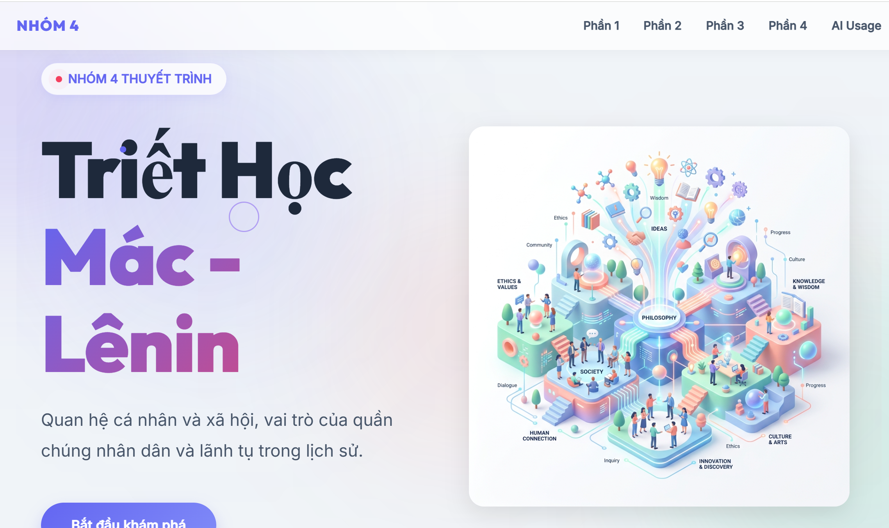

Triết Học
Mác - Lênin
01 QUAN ĐIỂM CỦA TRIẾT HỌC MÁC - LÊNIN
02 TÌNH HUỐNG THỰC TẾ
Một CLB sinh viên tổ chức chiến dịch tình nguyện lớn. Trưởng nhóm C rất nổi tiếng trên mạng, được xem như “linh hồn” của chương trình. C thường tự quyết định mọi việc vì tin rằng mình có tầm nhìn tốt hơn. Các thành viên ban đầu ủng hộ, nhưng dần cảm thấy bị xem nhẹ, chỉ làm theo lệnh. Khi chiến dịch gặp sự cố (thiếu kinh phí, tổ chức kém), C đổ lỗi cho “đội ngũ không đủ năng lực”, còn các thành viên cho rằng C độc đoán.
03 CON NGƯỜI TRONG CÁCH MẠNG VN
04 BÀI HỌC VÀ THỰC TIỄN
Đạo đức
Đặt lợi ích tập thể lên trên cá nhân, tôn trọng nguyên tắc dân chủ.
Năng lực
Không ngừng học tập, nâng cao trình độ chuyên môn đáp ứng công việc.
Lãnh đạo
Là "công bộc", biết lắng nghe và phát huy trí tuệ của quần chúng.
05 MINH BẠCH ỨNG DỤNG AI
1. Nguồn Học Liệu
Giáo trình, tài liệu môn học, nội dung case, văn bản chính thống, slide nhóm.
2. AI Hỗ Trợ
Gợi ý cấu trúc, diễn đạt, ý tưởng trình bày, tổ chức nội dung.
3. Nhóm Đối Chiếu
Kiểm chứng, loại bỏ phần thiếu căn cứ, chỉnh sửa phù hợp yêu cầu học thuật.

4. Sản Phẩm Cuối
Website tương tác là kết quả do nhóm chịu trách nhiệm học thuật và trình bày.